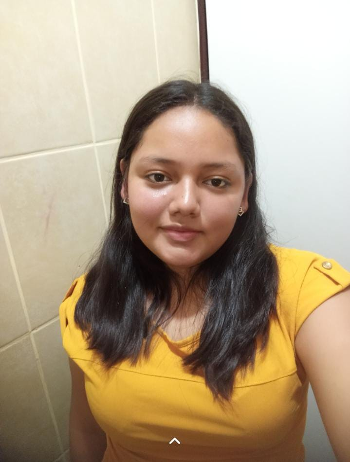

Somos estudiantes comprometidos con nuestro aprendizaje,
el trabajo en equipo y el desarrollo de soluciones tecnológicas.

Bertha Patricia Lopez Garcia
Profesión
Estudiante de Ingeniería en Tecnología de la Información
con énfasis en Desarrollo Web y Marketing Digital.
Presentación personal
Soy una persona creativa, abierta al cambio y me gusta
aprender cosas nuevas. Actualmente estudio los días
domingos en el turno dominical.
Breve biografía
Curso el tercer año de Ingeniería en
Tecnología de la Información en la UNAN-León, con
énfasis en Desarrollo Web y Marketing Digital.
Objetivo personal
Mi objetivo es aprender cada día más, culminar mi carrera
universitaria y fortalecer mis habilidades de programación.
Edipcia de los Angeles Rueda Perez
Profesión
Estudiante de Ingeniería en Tecnología de la Información,
con énfasis en Desarrollo Web y Marketing Digital.
Presentación personal
Soy una persona interesada en aprender y desarrollar
nuevas habilidades en el área de la tecnología. Me gusta
conocer herramientas que me permitan crear páginas web,
desarrollar aplicaciones y explorar el marketing digital.
Breve biografía
Actualmente curso el tercer año de mi carrera y continúo
fortaleciendo mis conocimientos en programación y desarrollo
web. He realizado proyectos académicos que me permiten
practicar lo aprendido y conocer nuevas herramientas.
Objetivo personal
Mi objetivo es prepararme profesionalmente en Desarrollo
Web y Marketing Digital, fortalecer mis conocimientos de
React, Vue y Laravel, y crear sitios web y aplicaciones
funcionales, creativas y útiles.
Jose Giovanny Gonzalez Ruiz
Profesión
Estudiante de Ingeniería en Tecnología de la Información,
con énfasis en Desarrollo Web y Marketing Digital.
Presentación personal
Soy una persona introvertida. Me gusta aprender de mis
errores y llevar mis capacidades al límite. También me
gusta trabajar en equipo porque podemos apoyarnos
mutuamente y adquirir nuevos conocimientos.
Breve biografía
Actualmente estudio mi carrera universitaria y continúo
adquiriendo conocimientos por mi cuenta para crear
proyectos y mejorar mis capacidades tecnológicas.
Objetivo personal
Mi principal objetivo es desarrollar nuevas habilidades
que me permitan mejorar como estudiante, crear proyectos
tecnológicos y acceder a nuevas oportunidades profesionales.